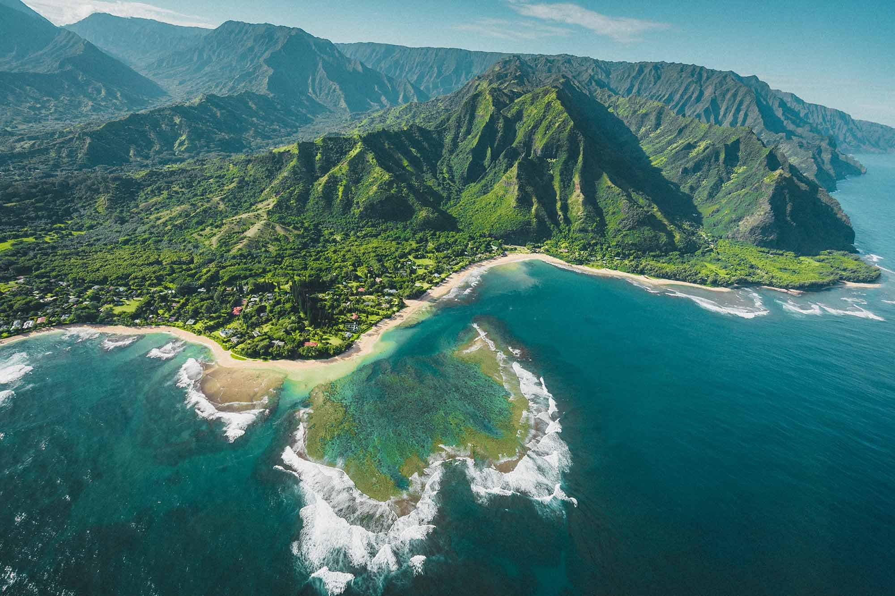
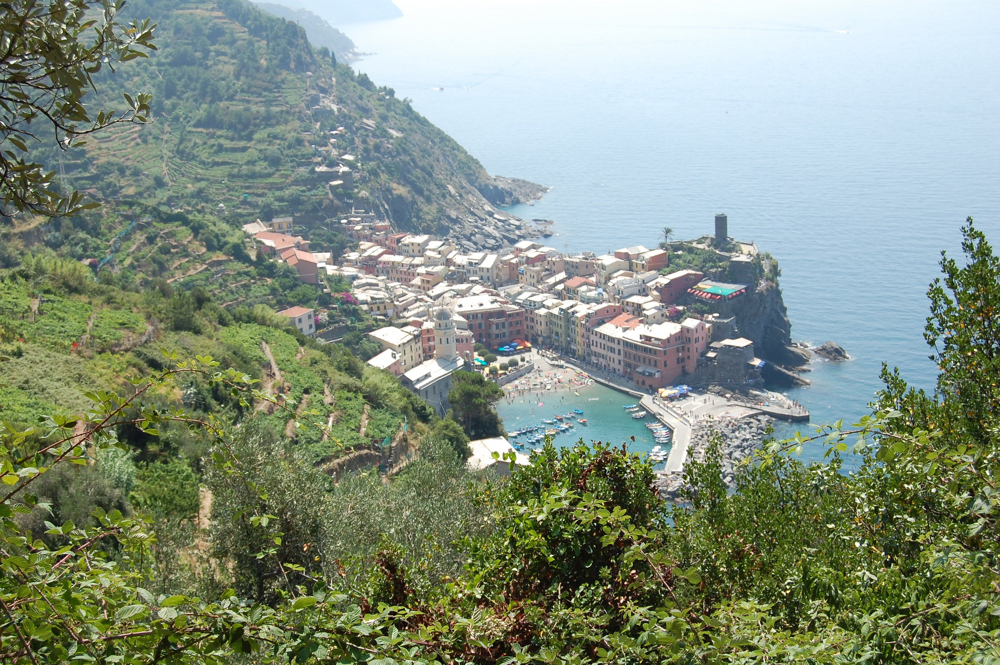

Travel
Chiangmai, Thailand
Geographical Location: Asia


Chiang Mai, nestled in the lush hills of northern Thailand, is a city that captivates with its unique blend of cultural richness and natural beauty. Situated approximately 700 kilometers north of Bangkok, Chiang Mai is the largest city in the region and serves as the capital of the province of the same name. Its geographical location is nothing short of enchanting, surrounded by forested mountains and picturesque landscapes. This charming city, often referred to as the "Rose of the North," offers visitors a delightful escape from the bustling urban life, inviting them to explore a realm where tradition meets modernity amidst a backdrop of stunning scenery.
The heart of Chiang Mai beats with a rich history that dates back over 700 years. Founded in 1296, the city was originally the capital of the ancient Lanna Kingdom. Today, remnants of its storied past are scattered throughout the city, from the ancient temples that dot the landscape to the preserved city walls and moats that harken back to a bygone era. Among the city's treasures is the revered Wat Phra Singh, a 14th-century temple known for its intricate architecture and revered Buddha image. Chiang Mai's historical sites provide a captivating glimpse into its heritage, making it a destination that seamlessly weaves together the past and present for visitors to explore and appreciate.
Photo Gallery

You can see hot balloons in Chiang Mai as well.

You can see cute elephants in Chiang Mai! Isn’t that fun?!

There are so many beautiful temples in Chiang Mai.

Be respectful to the monks.

And don’t forget to treat yourself with delicious Thai food!
Hawaii
Geographical Location: United States


Hawaii, a mesmerizing archipelago in the central Pacific Ocean, is a tropical paradise renowned for its unparalleled natural beauty and vibrant culture. Comprising eight main islands, each with its own distinct charm, Hawaii beckons travelers with its lush landscapes, pristine beaches, and diverse ecosystems. The volcanic origins of the islands have given rise to stunning geological formations, such as the iconic Diamond Head crater on Oahu and the otherworldly landscapes of the Big Island. Beyond its breathtaking scenery, Hawaii is a melting pot of cultures, blending native Hawaiian traditions with influences from Asia, Europe, and the Americas. Visitors can immerse themselves in the warmth of aloha spirit, savor traditional Hawaiian cuisine, partake in hula and ukulele performances, or simply relax under swaying palm trees while enjoying the soothing sounds of the Pacific waves.
From the world-famous surf breaks of the North Shore on Oahu to the serene shores of Maui's Hana Bay, Hawaii offers a diverse range of experiences for every type of traveler. Snorkeling in the crystal-clear waters, hiking through lush rainforests, or exploring historic sites like Pearl Harbor and the Polynesian Cultural Center, Hawaii is a destination that captivates both adventure seekers and those in search of tranquil escapes. Whether you're drawn to the vibrant nightlife of Honolulu, the spiritual energy of the Haleakalā volcano, or the laid-back atmosphere of Kauai's Garden Isle, Hawaii's enchanting allure promises a tropical getaway like no other.
Photo Gallery

Beautiful cliffsides of Hawaii

Even the drives are scenic!

Enjoy the beautiful underwater wildlife

Maybe get lucky enough to see a whale
Enjoy the scenic mountains from above
Italy
Geographical Location: Europe


Italy, a country synonymous with rich history, exquisite art, and delectable cuisine, is a captivating tapestry of diverse landscapes and cultural wonders. Nestled in the heart of the Mediterranean, Italy boasts a heritage that spans millennia, with ancient ruins, medieval castles, and Renaissance masterpieces adorning its cities and countryside. Rome, the eternal city, is a living museum with iconic landmarks like the Colosseum, Roman Forum, and Vatican City, where the Sistine Chapel's awe-inspiring ceiling painted by Michelangelo is a testament to the country's artistic prowess. The charm of Florence lies in its cobbled streets, housing treasures like the Uffizi Gallery and the Florence Cathedral, while Venice's labyrinthine canals and elegant architecture make it a timeless romantic destination.
Beyond its cultural wealth, Italy is celebrated for its culinary delights, making it a gastronomic haven for food enthusiasts. From the simplicity of a perfect Margherita pizza in Naples to the sumptuous pasta dishes of Bologna, and the exquisite wines of Tuscany, each region contributes unique flavors to Italy's culinary mosaic. The country's culinary heritage is a testament to the passion Italians have for good food, and the communal joy of sharing meals with family and friends is deeply ingrained in the Italian way of life. With its blend of art, history, and gastronomy, Italy invites travelers to immerse themselves in a sensory journey that showcases the country's timeless beauty and enduring cultural legacy.
Photo Gallery

Beautiful city with a cove of ocean.

A coastal Italian city dramatically lit up at night
The cities are near lush greenery as well

The sunsets are magnificent on the coast

Explore the cities with canals